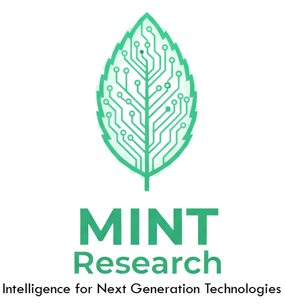

Welcome to the official home of the MINT Research Group. Based at the University of Sydney, we focus on the intersection of Machine Learning, Software Engineering, and high-impact application domains.
MINT is a recursive research collective dedicated to developing “fresh” algorithmic solutions. We believe that the best technology should be like mint: crisp, essential, and refreshing.
We are just getting started. If you are a student or researcher at USYD interested in “salt-of-the-earth” research with a “mint” finish, keep an eye on this space.
“The future is recursive.”
Are you a Software Engineering at USYD student looking for a project that balances academic rigor with real-world impact? We are looking for motivated students for 2026, and beyond.
Thinking of something else? Get in touch with Ali.
University of Sydney | School of Electrical and Computer Engineering | Dr. Ali Shakiba